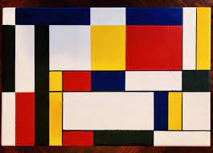
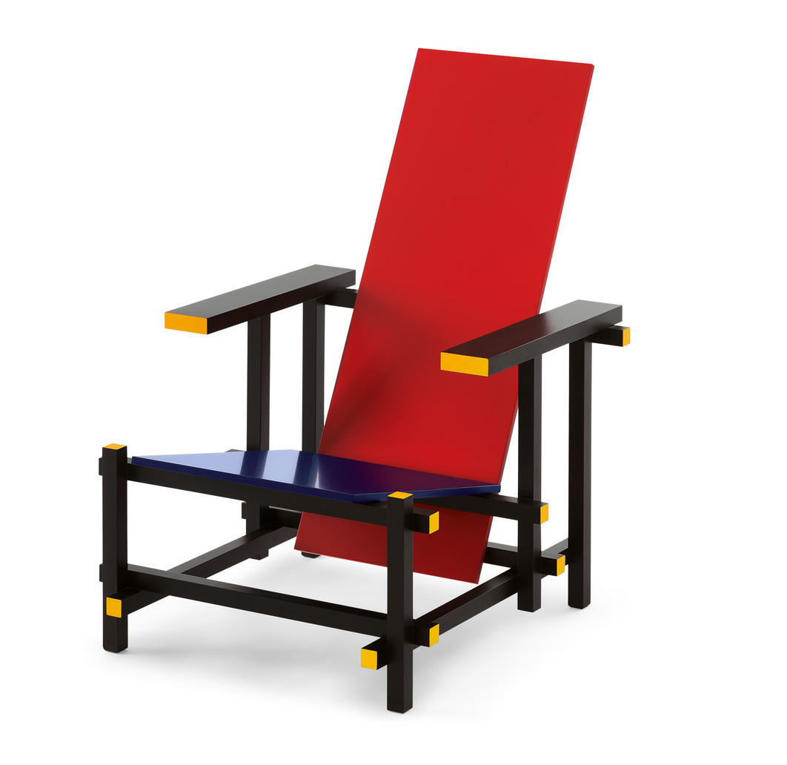
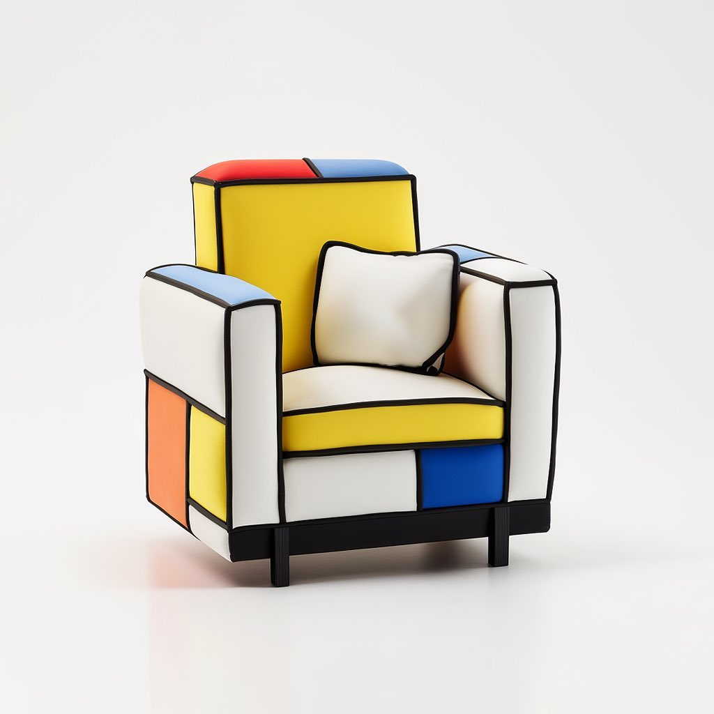

Definición
El neoplasticismo (De Stijl) es una corriente artística que reduce la forma a lo esencial: líneas verticales y horizontales, rectángulos y una paleta limitada a colores primarios más blanco y negro. Busca un equilibrio universal y una estética objetiva.
Principios
- Uso de línea recta y ángulos rectos.
- Planos de color puros: rojo, amarillo, azul; blanco y negro.
- Composición equilibrada mediante asimetría y ritmo.
- Integración entre arte, diseño y arquitectura.
Aplicaciones
Sus ideas trascendieron la pintura y se aplicaron en diseño gráfico, mobiliario y arquitectura. La reducción formal y la claridad cromática sirvieron para crear productos, interiores y edificios de líneas limpias y funcionales.
Conceptos clave
- Universalidad: un lenguaje visual válido más allá del artista individual.
- Abstracción: renuncia a la representación figurativa en favor de estructuras básicas.
- Economía de medios: menos elementos, mayor claridad.
Protagonistas
Piet Mondrian y Theo van Doesburg fueron sus principales impulsores, acompañados por Bart van der Leck y Gerrit Rietveld, entre otros.